Articoli PLU: anagrafica e schede dell'articolo
Target: tecnico installatore / rivenditore.
Obiettivo
Creare un articolo PLU con prezzo e tipo di vendita, conoscere le schede di personalizzazione (Stampa, Tracciabilità, Barcode, Testi, Immagini, Extra) e collegare l'articolo a categoria, tracciabilità, promozioni e immagini.
Prerequisiti
- Le Categorie Merceologiche sono state create.
- Il banco su cui lavori è quello attivo: in alto a destra la pagina mostra Banco 02 e il numero del PLU in modifica. Gli articoli appartengono al banco: il PLU numero 1 della macelleria è diverso dal PLU numero 1 della salumeria.
Bilancia di partenza
Una bilancia nuova può avere già programmati tre o quattro articoli di esempio: non incidono sulla programmazione che si fa qui. Tutti i campi sono modificabili anche tramite aggiornamento diretto sul database o tracciati di file esterni.
Procedura
1. Apri Articoli PLU
Da Archivi Dati tocca Articoli PLU. La lista mostra le colonne PLU, Descrizione, Prezzo, Tipo, B.Prz, Attivo e Tracc.. Il pulsante + crea un articolo.
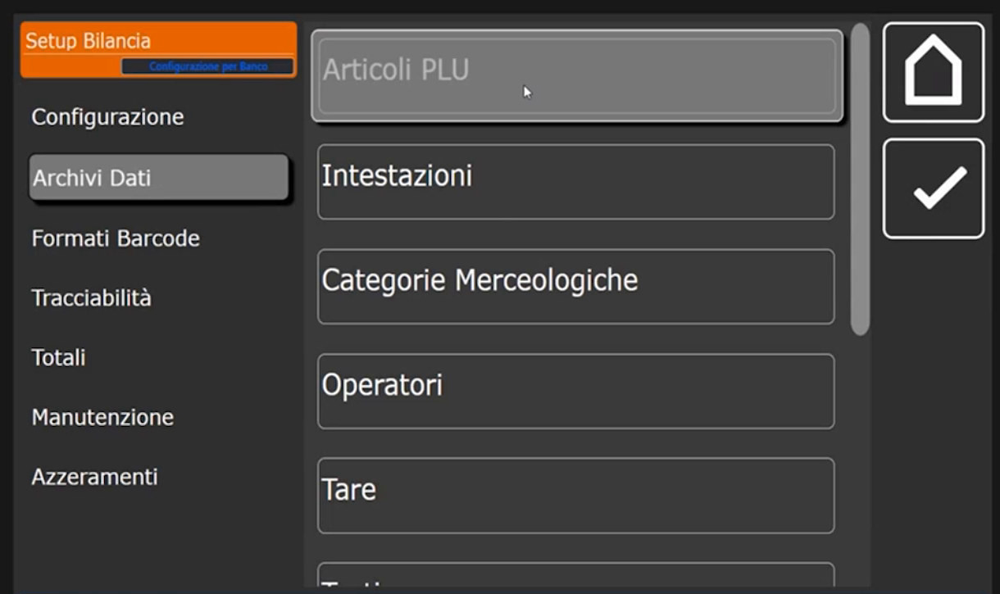
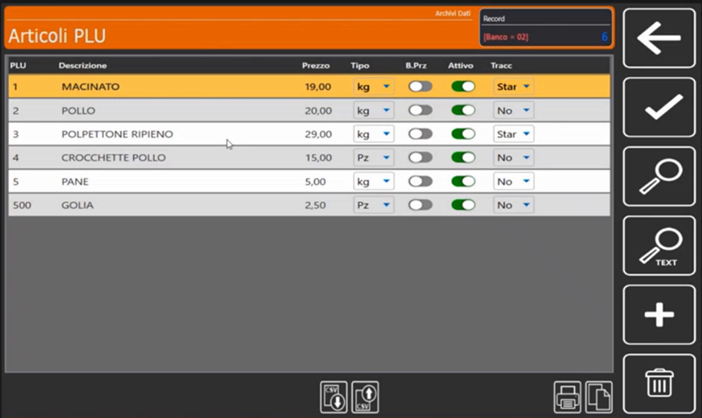
2. Crea un articolo: scheda Generale
Tocca +, digita il Codice PLU (per esempio 6) e conferma con Ok. Si apre la scheda Generale: nella maggior parte dei casi basta questa per programmare la bilancia.
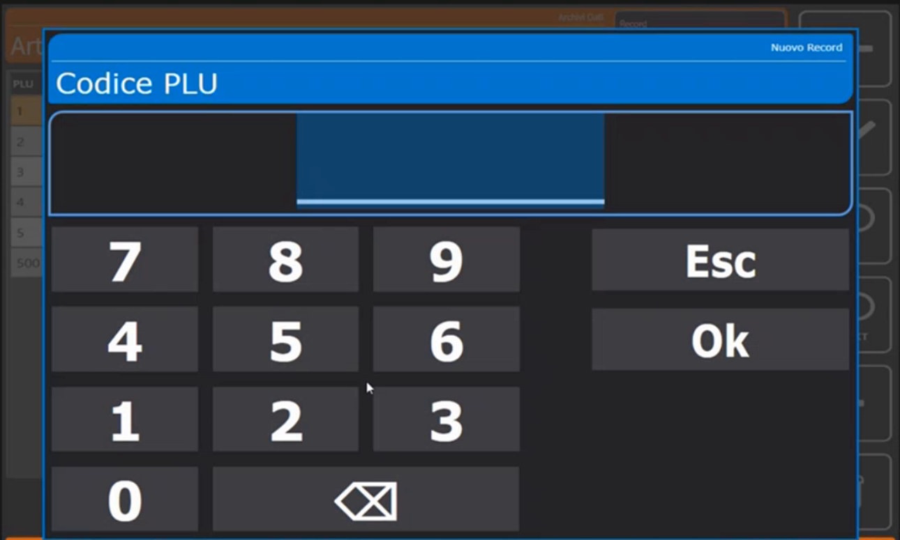
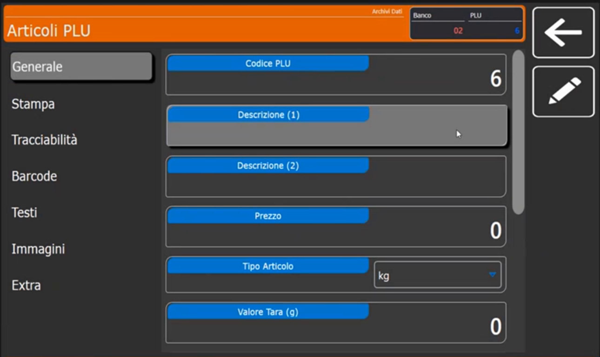
-
Descrizione (1): tocca il campo e scrivi il nome con la tastiera. Esiste una Descrizione (2), utile quando la prima non basta a definire l'articolo o per le varie uscite di stampa.
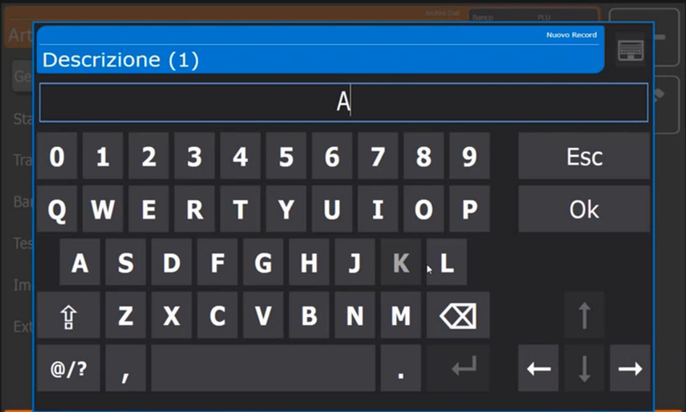
-
Prezzo: il prezzo di riferimento (per esempio 5 euro).
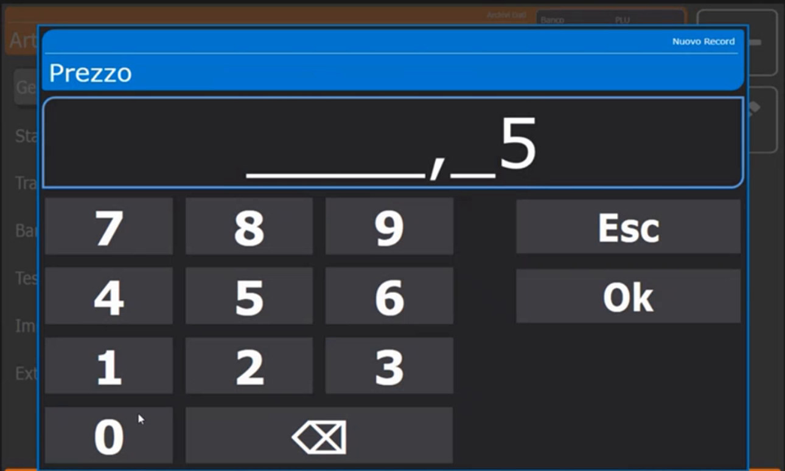
-
Tipo Articolo: a kg, a pezzo (Pz) o Ng. La scelta determina il modo di vendita.
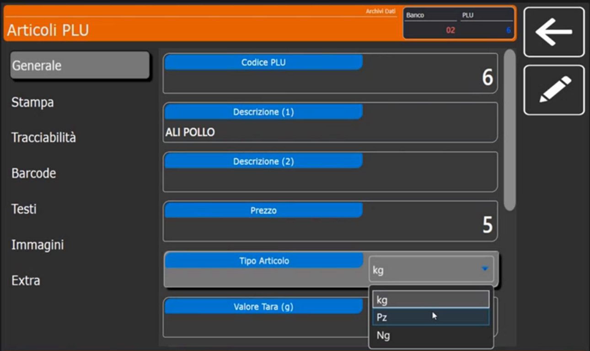
-
Valore Tara (g): si può assegnare una tara già in anagrafica. Serve soprattutto per l'etichettatura.
- Pezzi Predeterminati: per gli articoli a pezzo, i pezzi proposti (nell'esempio 1).
- Blocco Prezzo: blocca il prezzo del PLU. Il comportamento generale dipende dalla Configurazione Operativa.
- Data Scadenza, Data Stagionatura, Data Produzione: servono all'etichettatura (vedi sotto).
- PLU Attivo: l'interruttore deve essere acceso (verde).
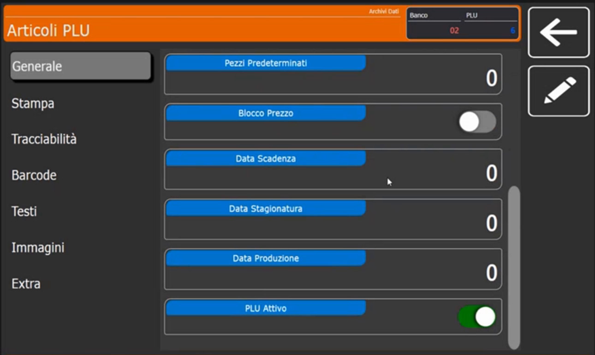
Date in giorni o in data pura
Toccando un campo data compare il tastierino Data Scadenza ( ... in Giorni ). Se digiti un numero breve (per esempio 20) la bilancia lo interpreta come giorni; se continui a scrivere, il numero si trasforma direttamente in una data, indipendente dal giorno in cui si etichetta. Se non indichi la data di produzione, il sistema usa la data odierna; puoi forzarla per etichettare in modo retroattivo (o con una data futura). Il numero scelto decide se la scadenza è espressa in giorni o in data pura.
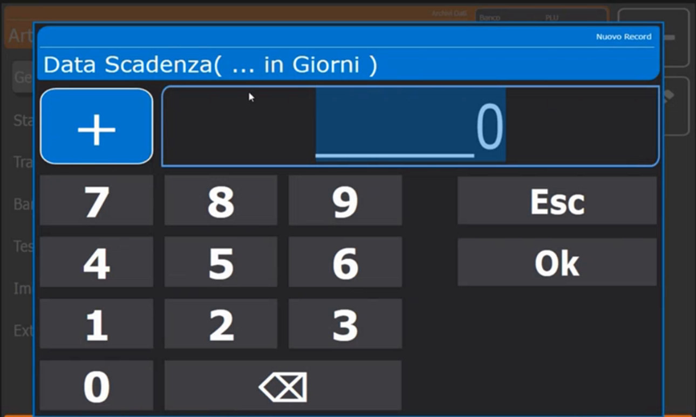
Fatto questo l'articolo è già creato e compare nell'archivio.
3. Le schede dell'articolo
Rientrando nell'articolo, a sinistra compaiono le schede legate all'articolo stesso: Generale, Stampa, Tracciabilità, Barcode, Testi, Immagini, Extra. Valgono al di là di quanto impostato nelle configurazioni generali: la scheda dell'articolo prevale.
Stampa
Quando si vende l'articolo e si etichetta può stampare un layout grafico particolare per quell'articolo. Con la lente si apre l'archivio a cui sono collegate le tabelle. Se lasci 0 come formato, la bilancia usa il formato di default delle opzioni di etichetta oppure il formato che cambi al volo in etichettatura (vedi Etichettatura in vendita).
Campi: Formato Etichetta, Formato Etichetta Totale (1), (2) e (3), Formato Riga Scontrino, Formato Coupon. I formati totali servono per chi fa confezionamenti a più livelli: per esempio una scatola, poi il pallet, con un'etichetta totale che riepiloga le informazioni.
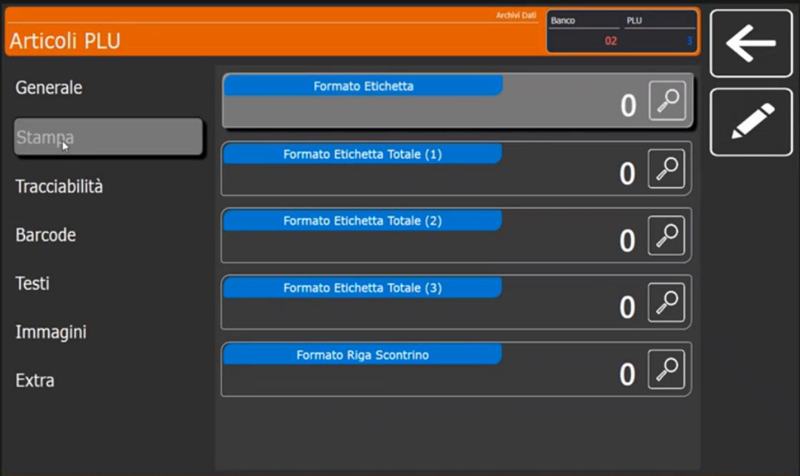
Tracciabilità
Per le carni e per tutti i prodotti che lo richiedono. Campi: Tracciabilità (nella lista la colonna Tracc. mostra Star per Standard, oppure No) e Lotto Predefinito. Il lotto predefinito di norma non si assegna per i prodotti tracciati, perché il lotto cambia di settimana in settimana in base alla carne acquistata. Come si definiscono definizioni e lotti: Tracciabilità e lotti.
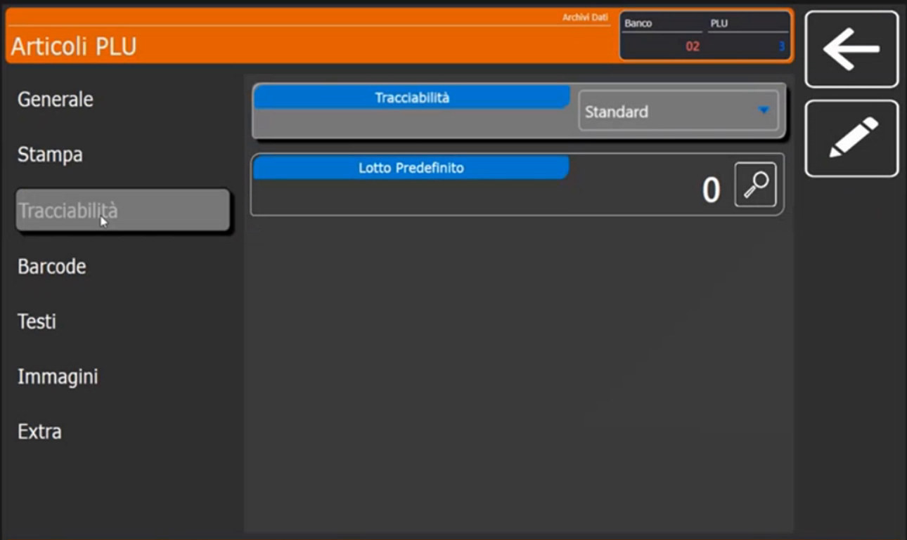
Barcode
Permette di personalizzare il barcode sul singolo articolo: oltre al barcode generico programmato, puoi indicare un EAN specifico che non segue la struttura impostata sulla bilancia. Campi: Formato Barcode Etichetta, Barcode Etichetta, Formato Barcode Etichetta Totale (1), (2) e relativi barcode. Con due barcode (articolo e totale) puoi identificare lo stesso articolo con due EAN diversi quando lo usi in etichettatura o su un formato di etichetta totale.
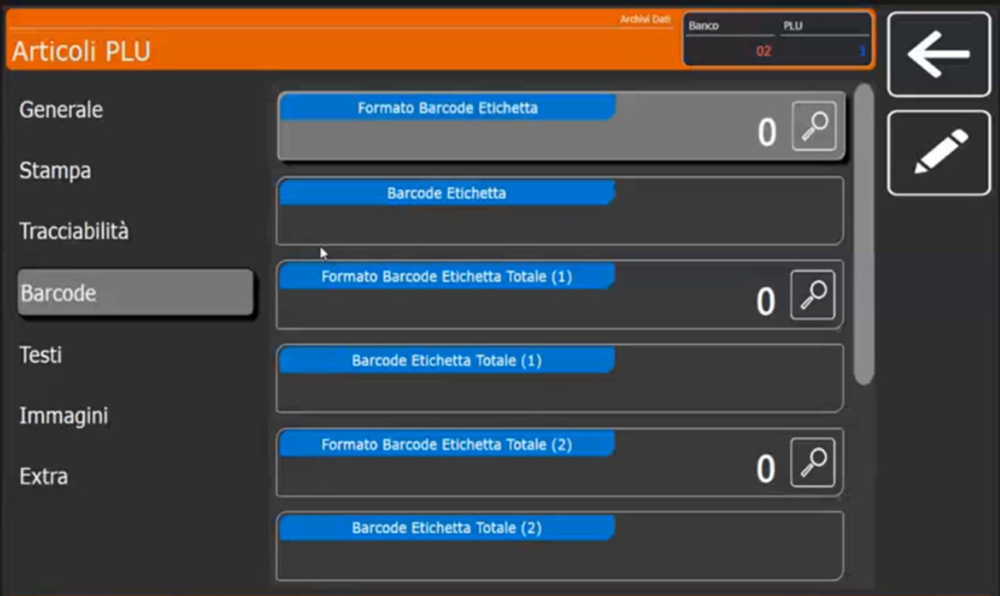
Per gli articoli a pezzo venduti con lo scanner (per esempio una confezione di caramelle) il campo Barcode Scanner riceve l'EAN letto fisicamente dallo scanner collegato alla bilancia.
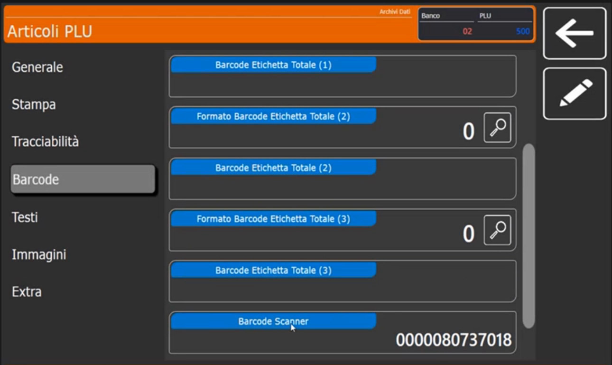
Testi
La bilancia gestisce più box di testo per articolo (ingredienti, allergeni, istruzioni) e può collegare tabelle di testo e la tabella nutrizionale. È un capitolo ampio: vedi Box ingredienti e tabelle testi e Tabelle nutrizionali.

Immagini
Campi: Immagine Tasto, Immagine Self Service, Immagine Promozionale e Immagine B/N per Stampa. Con la lente si richiama un'immagine dall'archivio immagini della bilancia; il cestino la rimuove.
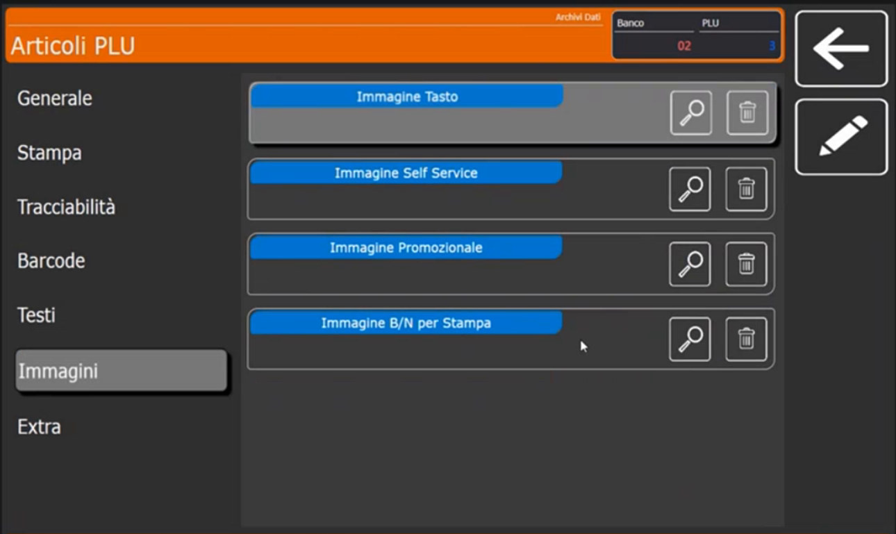
| Immagine | Quando viene mostrata | Dimensioni |
|---|---|---|
| Immagine Tasto | Sul tasto dell'articolo nella tastiera Retail | 120x120 pixel per il tasto grande quadrato, 60x60 pixel per il tasto piccolo standard, 60x120 o 120x60 per i tasti doppi in verticale o in orizzontale |
| Immagine Self Service | Quando la bilancia lavora in Self Service | secondo il formato del tasto |
| Immagine Promozionale | Sul display lato cliente, quando si tocca l'articolo | |
| Immagine B/N per Stampa | Stampata sull'etichetta, in BMP |
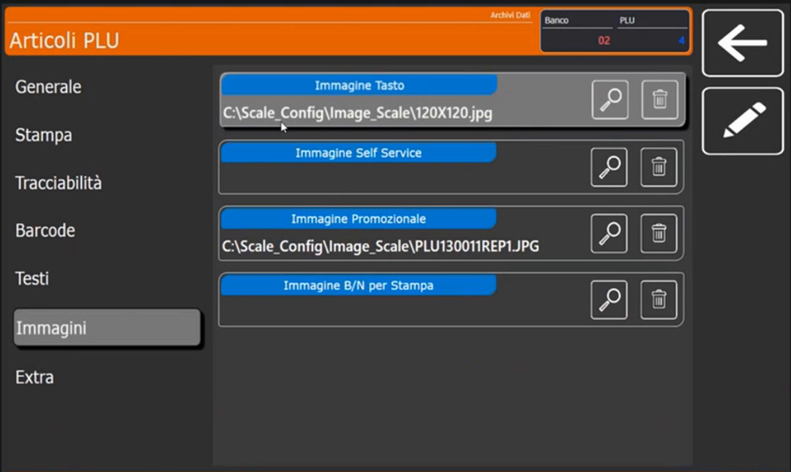
- Più immagini ci sono nella bilancia (anche un migliaio) e più sono ad alta risoluzione, più la bilancia impiega circa un secondo a mostrare l'elenco.
- Le immagini non vengono ridimensionate. Su un tasto grande da 120x120 un'immagine 60x60 non viene mostrata: al suo posto la bilancia visualizza un segnaposto con la dicitura "120x120 pixel" e una croce rossa. Sui tasti doppi, invece, un'immagine 60x60 viene mostrata centrata. Vedi Funzioni di vendita.
- Immagine in stampa. Una foto in bianco e nero stampata sull'etichetta ha poco significato, ma il campo si può sfruttare in altri modi: per esempio un QR code che apre il profilo social dell'esercente o un ricettario. Si converte il QR code in un'immagine BMP e la si aggancia al formato etichetta. Con uno spazio ridotto si ottiene una sorta di pubblicità gratuita (vedi Formati Etichetta).
Extra
Campi: Prezzo Alternativo, Gruppo Merceologico, Iva %, Sconto % e ID Promozione.
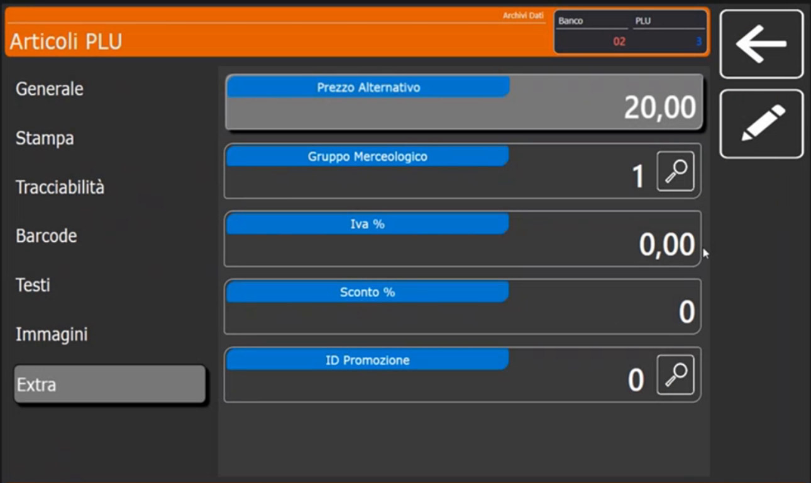
-
Gruppo Merceologico: collega l'articolo a una categoria. È il collegamento che fa comparire l'articolo nella scheda corrispondente della tastiera. La lente apre l'elenco delle categorie.
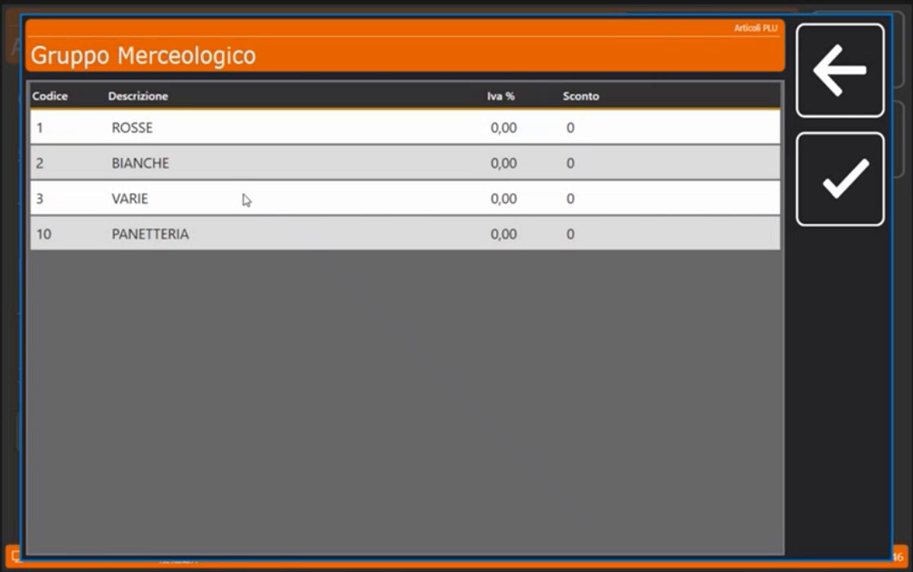
-
Prezzo Alternativo: se serve un doppio listino si può definire un secondo prezzo, comodo soprattutto per il confezionamento per conto terzi. Si passa da un listino all'altro con un tasto (vedi Funzioni di vendita).
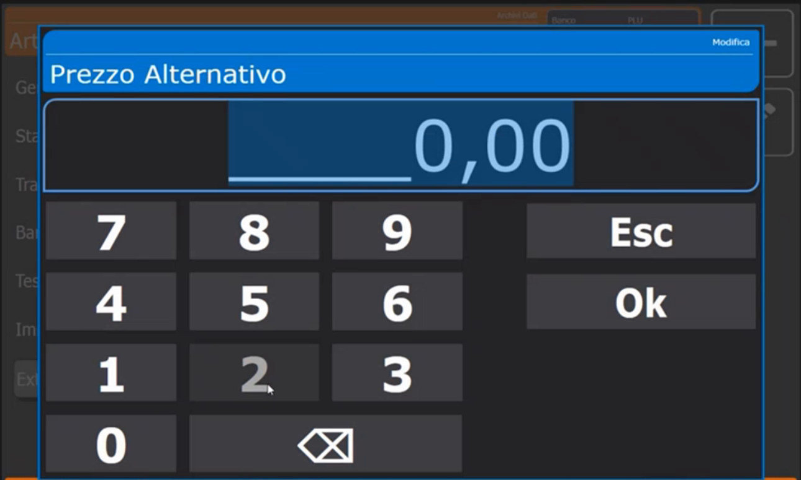
-
ID Promozione: collega l'articolo a una promozione (vedi Promozioni).
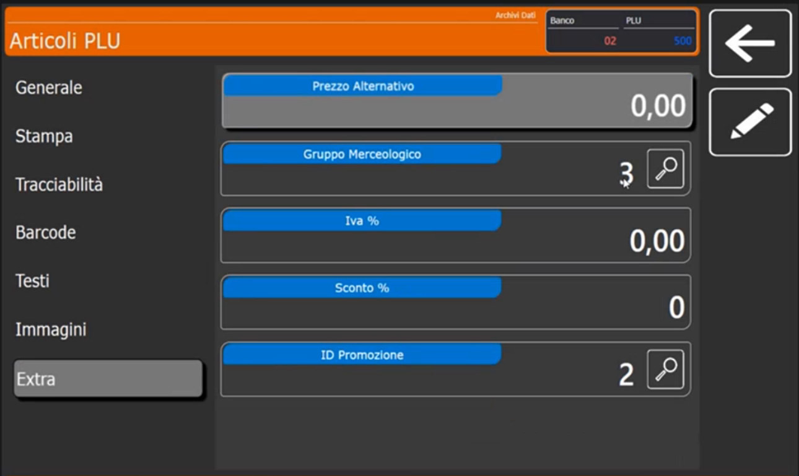
Esempio: articolo a pezzo
Un articolo a pezzo si crea come un articolo a peso, impostando Tipo Articolo su Pz e Pezzi Predeterminati. Nell'esempio un pacchetto da 250 g viene venduto a 2,50 con Barcode Scanner valorizzato.
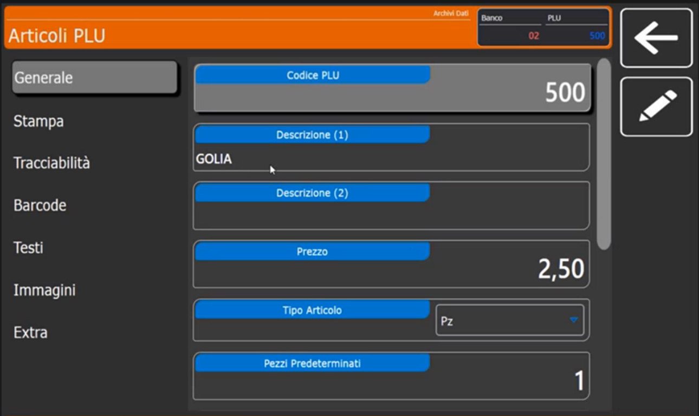
Verifica
Nella lista l'articolo compare con Prezzo, Tipo, Attivo acceso e Tracc. secondo la programmazione.
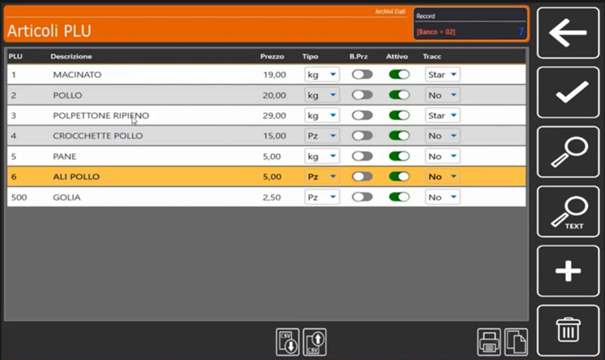
Esci dal configuratore e torna in vendita: la bilancia mostra il messaggio Programmazione Bilancia ... e ricarica il layout. I tasti compaiono quando l'articolo è collegato a una tastiera (Configurazione Tastiera) o a una scheda (Schede Tastiera).
Errori comuni
| Problema | Causa probabile | Rimedio |
|---|---|---|
| L'articolo non compare nella scheda della tastiera | Gruppo Merceologico non impostato o diverso da quello della scheda | Nella scheda Extra collega l'articolo alla categoria giusta |
| L'etichetta non riporta la tracciabilità | Articolo con Tracciabilità disattivata, oppure banco senza tracciabilità | Attiva la tracciabilità sul banco e sull'articolo (Tracciabilità e lotti) |
| L'immagine non compare sul tasto | Dimensioni non adatte al tasto o immagini tastiera disattivate | Usa 60x60 per il tasto standard e 120x120 per il tasto grande, e attiva Abilita immagini tastiera RETAIL |
| La scadenza è sbagliata | Il numero digitato è stato interpretato come data | Controlla se il campo mostra giorni o data pura |
Prossimo passo
Per collegare gli articoli ai tasti: Configurazione Tastiera.